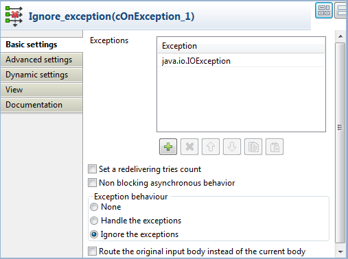
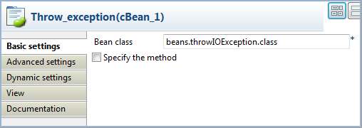
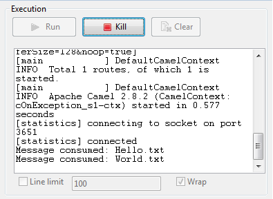

|
Component Family |
Exception | |
|
Function |
cOnException catches the defined exceptions to trigger desired actions. | |
|
Purpose |
cOnException is designed to catch the defined exceptions for desired error handling. | |
|
Basic settings |
Exceptions |
Click the plus button to add as many lines as needed in the table to define the exceptions to be caught. |
|
Set a redelivering tries count |
Select this check box to set the maximum redelivering tries in the Maximum redelivering tries field. | |
|
Non blocking asynchronous behavior |
Select this check box to enable asynchronous delayed redelivery. For details, go to http://camel.apache.org/exception-clause.html. | |
|
Exception behavior |
None: select this option to take no action on the original route. Handle the exceptions: select this option to handle exceptions and break out the original route. Ignore the exceptions: select this option to ignore the exceptions and continue routing in the original route. | |
|
Route the original input body instead of the current body |
Select this check box to route the original message instead of the current message that might be changed during the routing. | |
|
Usage |
cOnException is generally used as a standalone component in a sub-route. | |
|
Limitation |
n/a | |
In this scenario, a cOnException component is used to ignore an IO exception thrown by a Java bean so that the message is successfully routed to the destination in spite of the exception.

Drag and drop these components from the Palette onto the workspace: a cOnException component, a cFile component, a cBean component, and cProcessor component.
Link cFile to cBean using a Row > Route connection.
Link cBean to cProcessor using a Row > Route connection.
Label the components to better identify their roles in the Route.
Double-click the cOnException component, which is labelled Ignore_exception, to open its Basic settings view in the Component tab.
Click the plus button to add a line in the Exceptions table, and define the exception to catch. In this example, enter
java.io.IOExceptionto handle IO exceptions.In the Exception behavior area, select the Ignore the exceptions option to ignore exceptions and let message routing continue. Leave the other parameters as they are.
Double-click the cFile component, which is labelled Source, to open its Basic settings view in the Component tab.

In the Path field, enter the path of the message source, and leave the other parameters as they are.
Double-click the cBean component, which is labelled Throw_exception, to open its Basic settings view in the Component tab.
Select New Instance and in the Bean class field, enter the name of the bean to throw an IO exception, beans.throwIOException.class in this scenario.
Note that this bean has already been defined in the Code node of the Repository and it looks like this:
package beans; import java.io.IOException; import org.apache.camel.Exchange; public class throwIOException { /** * @throws IOException */ public static void helloExample(String message, Exchange exchange) throws IOException { throw new IOException("An IOException has been caught"); } }For more information about creating and using Java Beans, see Talend Open Studio for ESB User Guide.
Double-click the cProcessor component, which is labelled Monitor, to open its Basic settings view in the Component tab.

In the Code area, customize the code to display the file name of the consumed message on the Run console:
System.out.println("Message consumed: "+ exchange.getIn().getHeader("CamelFileName"));Press Ctrl+S to save your Route.
Click the Code tab at the bottom of the design workspace to check the generated code.

As shown above,
Ignore_exceptionhandles any IO exception thrown by.bean(beans.throwIOException.class)invoked bycBean_1, so that messagesfromthe endpointSourcecan be successfully routed onwards (continued(true)) in spite of the exception.Press F6 to execute the Route.
The route gets executed successfully and the files from the source are successfully routed to the destination.
Change the exception handling option in the cOnException component or deactivate the component and run the Route again.
The exception thrown by the Java bean prevents the messages from being routed successfully.